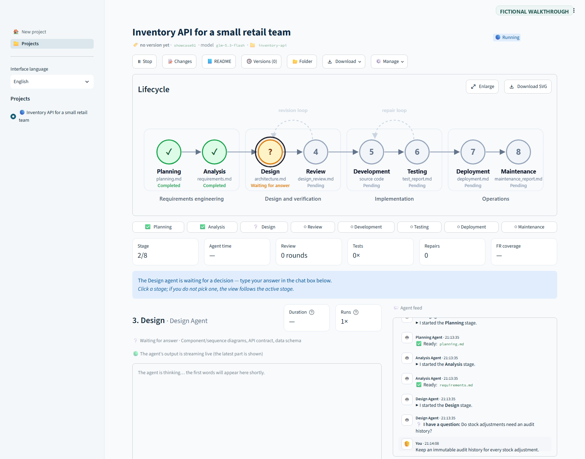

How it works

Which agent is running, which is done, which is asking a question.
The model's reasoning, the running command, the test result.
Source code ZIP, documents ZIP or one PDF with the diagrams.